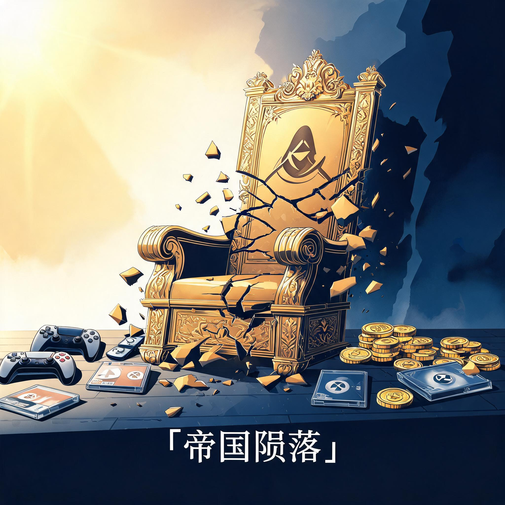
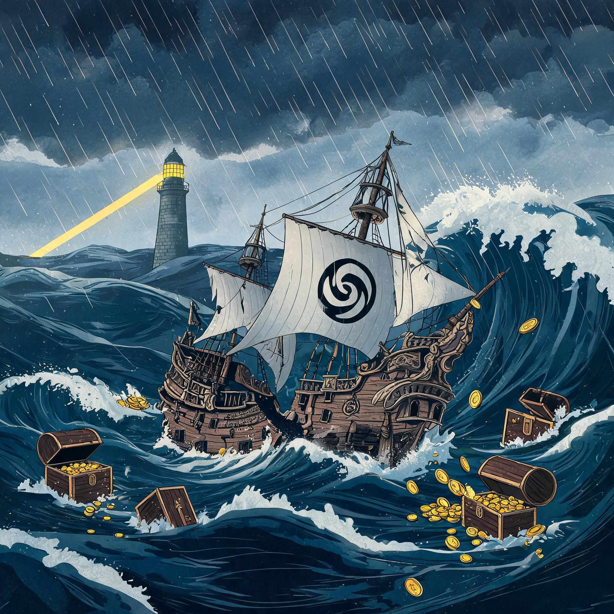

十年前手握刺客信条、孤岛惊魂、彩虹六号，市值百亿欧元，被视作开放世界游戏的统治者。如今市值5亿，创纪录亏损13亿。一家游戏巨头如何精准踩中每一个作死的坑。

从2018年击退维旺迪的高光时刻，到2026年市值低于年度亏损额。拖动时间轴，看帝国如何一阶一阶往下掉。
从巅峰到深渊，九年九个关键节点。点击展开详情。
育碧CEO称之为「首款4A级游戏」。10年开发，7次延期，成本够做20个《黑神话：悟空》。

育碧的护城河是IP矩阵、工业化产能、创意文化。四个动作，每一条都没放过。点击展开详情。
2018年的育碧 vs 2026年的育碧。每一个数字都在讲故事。
| 指标 | 巅峰（约2018-2021） | 现在（2025-26） |
|---|
2026财年研发支出18.55亿欧元。其中13.9亿直接与取消或延期的项目相关。
育碧的护城河是IP矩阵 + 工业化产能 + 创意文化。碧海黑帆证明了项目管理能力崩塌，性骚扰丑闻证明创意文化腐坏，罐头化证明产品力枯竭。
同样被骂「作死」的KONAMI靠战略收缩活得滋润（FY26净利1000亿日元），育碧却越扩张越亏。这说明作死的本质从来不是转型方向错了，而是执行力与成本结构的全面失控。
市场给的惩罚很直接：从100亿到5亿，95%的市值蒸发，只需要八年。